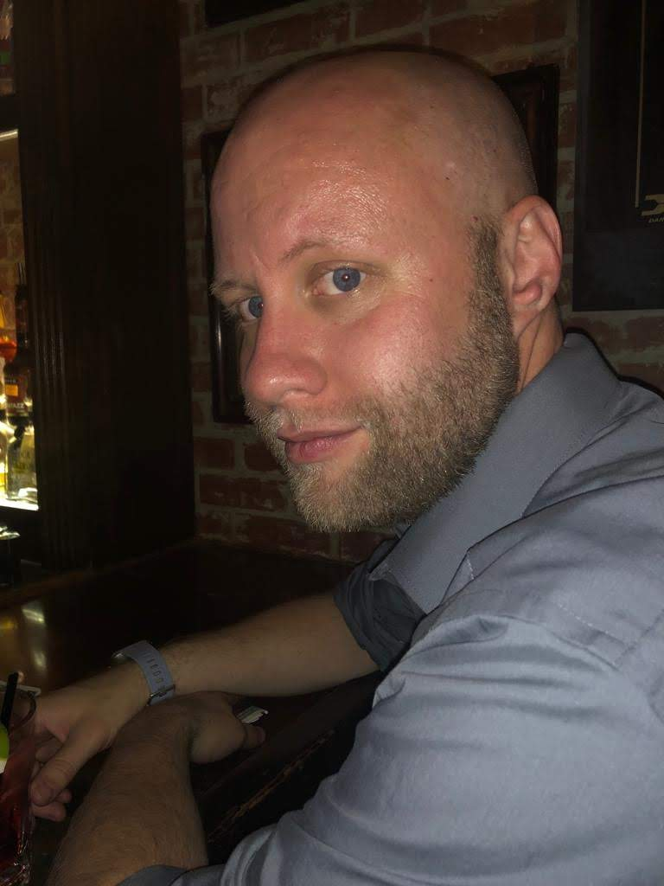

Thank you for visiting my profile. I'm a full stack developer with experience in:
Frontend: HTML, CSS, Bootstrap, Javascript, jQuery
Backend: Node.js, Node Handlebars, mySQL, Sequelize, and React.
I started taking a coding class at the Uniserity of Charlotte North Carolina, hosted by Trilogy. I became
interested in becoming a developer when I was looking for a new career, and tried out Python for a short
while on my own. While I was understanding a basic idea of how programming was working, I wanted to find a
more structured way of learning than just trying to be self-taught. Throughout that time I have learned how
to create pages and backend code that help run those pages.
Currently I reside in Charlotte, NC. I'm originally from Maryland, but also lived in Arizona for a few years.
At the time of living in Arizona I obtained my Bachelor's in English with a focus in literature. My current
profession is customer service for a major telecommunications company. In December of 2015 I obtained my
Master's in Business Administration with a focus of Human Resources. However, my interests started to turn more
towards IT shortly before being done my Master's program. At first it was for networking, but eventually moved
on towards programming instead, which led me towards learning web development. My current hobbies outside of
work and class includes hiking, karaoke, playing some video games, and at times trampoline dodgeball.
On this page you will find a link to show projects I have worked on that have helped me learn the content needed
towards being a full stack developer. You can use this site to also reach out to me as well via email. Thank you
for taking the time to read my bio and check this page.